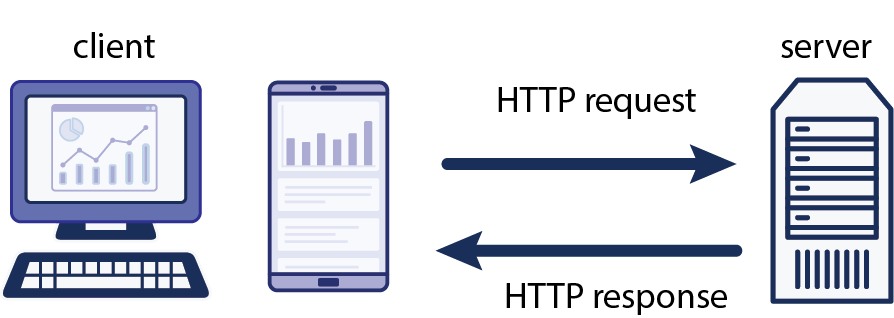
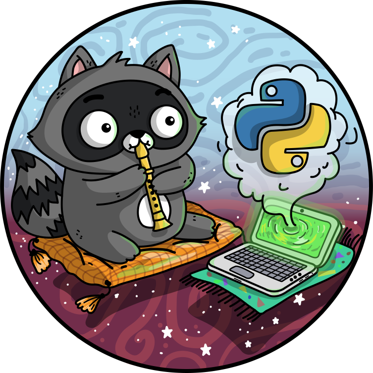
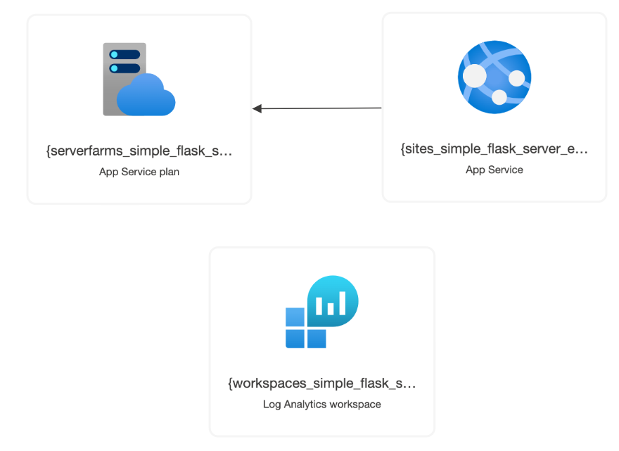

Python
Web Apps
- Press O or Escape for overview mode.
- Visit this link for a nice printable version
- Press the copy icon on the upper right of code blocks to copy the code
Welcome!
Classroom "rules":
- I am here for you!
- Every question is important
- Help each other
Introductions
Tell us about yourself:
- Name
- Pronouns
- Location
- Programming/Web experience
- What interests you about Python Web Apps?
- What's one non-digital activity you've enjoyed recently?
Today's topics

- How the web works
- Python for web apps: Flask
- Hosting web apps
Prerequisites
Online development: Github account
Local development:
Local development (option 2):
- Code editor
- Python 3
How the web works

Clients and servers
HTTP
A client sends an HTTP request:
GET /index.html HTTP/1.1
Host: www.example.com
The server sends back an HTTP response:
HTTP/1.1 200 OK
Content-Type: text/html; charset=UTF-8
Content-Length: 208
<!DOCTYPE html>
<html>
<head>
<title>Example Domain</title>
</head>
<body>
<h1>Example Domain</h1>
<p>This domain is to be used for illustrative examples in documents.</p>
</body>
</html>
HTTP Status Codes
The most commonly used codes:
| Code | Meaning |
|---|---|
| 200 | OK |
| 301 | Moved Permanently |
| 404 | Not Found |
| 500 | Server Error |
See more codes at HTTPcats.com or Wikipedia: List of HTTP status codes.
Webpages
Webpages are made up of three languages:
- HTML: Contains the content and uses tags to break it into semantic chunks (headings, paragraphs, etc)
- CSS: Contains style rules that apply properties to elements on a page.
- JavaScript: Contains code that dynamically accesses and updates the page content to make it more interactive.
What does a server do?
The most basic server just serves up HTML and multimedia files from a file system.
Server-side code is also useful for anything that requires access to persistent data or needs an additional layer of security than allowed in the client.
- User authentication
- Database fetches/updates
- Caching
Server-side Python
Simple HTTP server
The http module in the Python standard library can run a basic server.
⚠️ It is not recommended for production.
It's handy for learning and local development, however...
Example: Simple file server
A file server serves up files and folders according to their path in the file system. Also known as a static server.
Run a file server from any folder:
python3 -m http.server 8080
Example: Simple dynamic server
👩🏼💻 Repo: github.com/pamelafox/python-simple-server-example/
The server code is in server.py.
Uses the http module to dynamically generate responses.
Run the server:
python3 server.py
Flask framework
Flask, an external package, is a lightweight framework for server requests and responses.
Apps written in Flask:
- Khan Academy (originally)
- Netflix
Example: Simple Flask website
👀 Demo: tinyurl.com/simple-flask-website
👩🏼💻 Repo: github.com/pamelafox/simple-flask-server-example/
Most of the server code is in app.py. Uses Flask to generate responses for each route
Run the server:
python3 -m flask run --port 50505 --debug
Routes
Handle GET requests to "/about" route:
@app.get("/about")
def index():
return 'About Us'
Handle query parameters:
@app.get("/search")
def hello():
query = request.args.get("query")
return f"Searching for: {query}!"
Handle path parameters:
@app.get("/book/<id>")
def hello(name):
return f"Book with ID {id}!"
Routes
Handle POST requests:
@app.post("/submit")
def submit():
return "Thanks for submitting!"
Handle form data:
@app.post("/submit")
def submit():
name = request.form.get("name")
return f"Thanks for submitting, {name}!"
Handle JSON data:
@app.post("/submit")
def submit():
data = request.get_json()
name = data.get("name")
return f"Thanks for submitting, {name}!"
Template basics
Flask uses Jinja2 templates to render HTML.
Variables:
<h1>{{ title }}</h1>
Conditionals:
{% if user %}
<p>{{ user.name }}</p>
{% else %}
<p>Logged out</p>
{% endif %}
Loops:
<ul>
{% for item in items %}
<li>{{ item }}</li>
{% endfor %}
</ul>
Exercise: Flask App
Using this repo:
github.com/pamelafox/simple-flask-server-example/
- Follow the readme steps to get the app running.
- Add a new route for "/about" that uses a new "about.html" template.
- Check the new route works.
- Bonus: Accept a "location" query parameter for the new route and display the value on the page.
🙋🏼♀️🙋🏾♀️🙋🏽♀️ Let us know if you need any help! 🙋🏻♀️🙋🏽♂️🙋🏿♀️
Template inheritance
Jinja2 supports template inheritance, which allows you to define a base template that other templates can extend.
Base template:
<html>
<head>
<title>{{ title }}</title>
</head>
<body>
{% block content %}{% endblock %}
</body>
</html>
Child template:
{% extends "base.html" %}
{% block content %}
<h1>About Us</h1>
{% endblock %}
Exercise: Template Inheritance
Using this repo:
github.com/pamelafox/simple-flask-server-example/
or your own app from the previous exercise.
- Create a base template based on what's common across the other pages.
- Refactor the other templates to extend the base template.
- Change the 404 handler to render a template that extends the base template.
🙋🏼♀️🙋🏾♀️🙋🏽♀️ Let us know if you need any help! 🙋🏻♀️🙋🏽♂️🙋🏿♀️
Hosting web apps

Hosting options
When your website is hosted on a server, it means other users on the Internet can access it.
Many possible hosts:
- A rented computer in a data center
- A virtual machine
- A PaaS (platform as a service)
Consider:
- How much control do you want?
- How much do you enjoy administering systems?
- Do you need it to scale up/out?
Azure hosting options
| Azure Container Apps | Azure Functions | |||
| Azure Kubernetes Service | Container Management | Azure App Service | Serverless | |
| Environment | Containers | PaaS | ||
| Cloud | Azure | |||
For Flask, App Service is easiest way to get started.
But wait, there's more!
| Databases | PostGreSQL, MySQL, CosmosDB, ... |
|---|---|
| Storage | Blob Storage, Files, Archive Storage, ... |
| Networking | DNS Zone, Virtual Network, VPN Gateway, ... |
| Caching | CDN, Front Door, ... |
| Security | Key Vault, Security Center, ... |
| Machine Learning | Translator, Bot Service, Computer Vision, ... |
| ...and more! | |
Hosting the Flask app on Azure

Using the Azure Dev CLI:
azd up
Exercise: Deploying an app
- Sign up for a free Azure account
- Either open one of the previous projects in Codespaces or follow these installation steps for the Azure Developer CLI.
- Run
azd up. If prompted, login to your Azure account. - If it deploys successfully, share the endpoint URL with your classmates. If not, let us know what error you get. 🪲
- Once you've verified the app is working, run
azd downto un-deploy the app (so that you don't waste cloud resources unnecessarily).